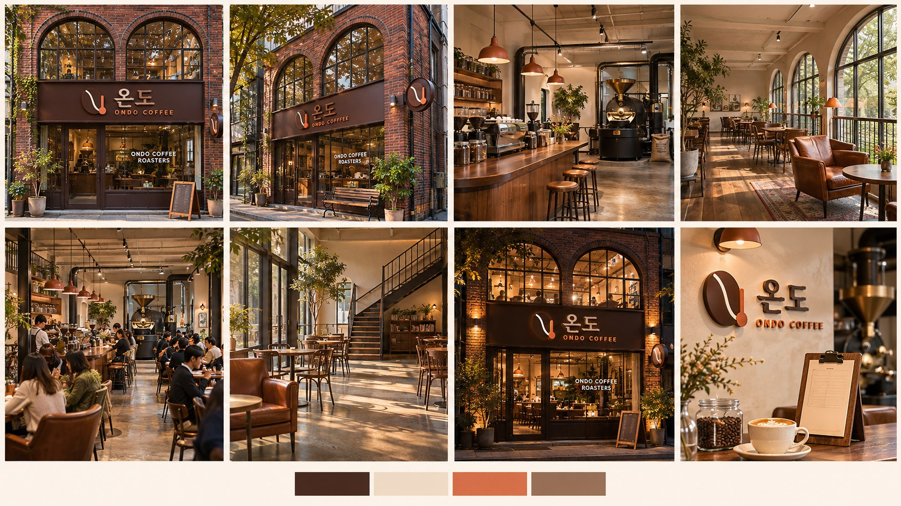
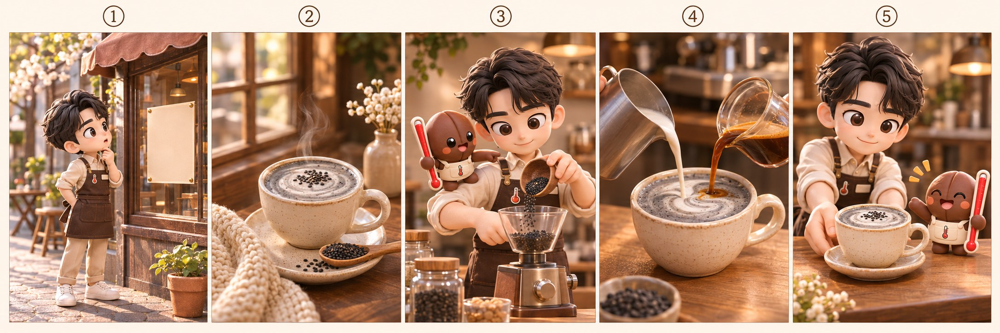

AI 이미지·영상 콘텐츠 제작 수강생용 안내 페이지입니다. 수업 순서대로 로그인·설치 → 교안 → 복사용 프롬프트 → MD·KB 파일을 모았습니다. 2주차(11/14) 자료는 아래 2주차 칸에 있습니다. 1주차(11/7) 자료는 1주차 다시 보기 페이지로 옮겼습니다.
안 되는 부분은 화면을 캡처해서 강사에게 보여주세요. 결과물은 단톡방에 올려 서로 공유합니다.
온도 카페 직원으로서 기획구성안 · 포스터 · 카드뉴스 · 숏폼 · 보고서를 봇으로 만듭니다. 교안 순서대로 정리했습니다. 모든 글은 복사, 모든 파일은 받기로 가져가세요.
한 눈에 보는 오늘 수업 흐름입니다. 누르면 그 파트로 이동합니다.
위 (SBA) 온도봇 받기 ZIP을 바탕화면에 풀면 SBA_온도봇 폴더 하나가 생깁니다. 프로젝트는 봇마다 따로 만들고, 폴더는 모두 이 폴더 하나만 연결합니다.
프로젝트 이름 6개 (수업 순서)
봇이 번호 메뉴를 보여 줍니다. 번호만 입력하면 그 봇으로 바로 시작합니다. 진행 규칙은 온도봇 안에 이미 들어 있어서 따로 붙여 넣을 필요가 없습니다.
봇이 캡컷·제미나이·일레븐랩스를 대신 조작하려면, 챗지피티 앱 안의 내부 웹에 로그인돼 있어야 합니다.
내부 웹에서 구글에 먼저 로그인해 두면, 다른 사이트는 “Google로 계속하기” 버튼만 누르면 들어갈 수 있습니다.
① 구글 로그인 페이지 열기
챗지피티 앱 내부 웹에서 구글 로그인 페이지(accounts.google.com)를 열어줘. 로그인은 내가 직접 할게. 끝났다고 하면 알려줄게.
② 사이트 3곳 한꺼번에 열기
이제 내부 웹에서 캡컷, 제미나이, 일레븐랩스를 각각 새 탭으로 한꺼번에 열어줘. 세 탭이 다 열리면 알려 줘. 각 탭에서 내가 "Google로 계속하기"를 눌러 로그인할게. 로그인 끝났다고 하면 세 곳 모두 로그인 상태인지 확인해 줘.
성수동 로스터리 카페 온도(ONDO). 시트 한 장이면 어느 장면이든 같은 얼굴 · 같은 매장으로 나옵니다.
* 이미 (SBA) 온도봇 폴더에 포함되어 있습니다. 참조만 하세요.

봇마다 스타일이 3개 이상 들어 있고, 핀터레스트 등에서 마음에 드는 이미지를 붙이면 메뉴판에 추가됩니다. AI는 “세련되게”를 모릅니다 — 숫자 · 규칙으로 풀어 주세요.
이 스타일도 추가해줘
이 영상으로 프레임 시트 만들어서 스타일로 추가해줘
세련되게 → 색 3개 이하 · 여백 화면의 40% 이상 · 장식 2개 이하 고급스럽게 → 다크 브라운 #4A2C21 바탕 · 세리프 제목 · 얇은 금색 선 1개 눈에 띄게 → 제목 높이 화면의 15% · 바탕과 명도 대비 7:1 이상 깔끔하게 → 정보 3줄 이하 · 왼쪽 정렬 · 글꼴 2종 이하 따뜻하게 → 크림 · 테라코타 계열 · 오후 4시 햇살 · 나무 소재
같은 내용, 스타일만 바꿔 세 번. 번호만 고르면 됩니다.
포스터봇 시작
시트를 첨부하면 얼굴 · 색 · 소품이 그대로 유지됩니다.
캐릭터봇 시작
첨부한 캐릭터 시트와 똑같은 온두로, 카페 바에서 핸드드립 커피를 내리는 장면을 3:2 가로로 그려줘. 글씨는 넣지 마.
정보형(원두 보관법)과 홍보형(흑임자 라떼) 각 4장.
카드뉴스봇 시작
기획안 · 구성안 PDF가 바통이 되어 숏폼봇으로 넘어갑니다. 25초 · 5신(생성 3 + 카드 2).
기획구성안봇 시작
숏폼봇 시작

첨부한 자료는 [대가 이름]의 숏폼 기획 노하우야. 이 자료에서 기획 원칙만 뽑아 MD 파일로 정리해줘. 원문 문장은 그대로 베끼지 말고, 쉬운 말로 요약해줘. [정리 항목] 1. 훅 설계 원칙 2. 구성(기승전결) 원칙 3. 엔딩 원칙 4. 자막 · 말투 원칙 5. 하지 말아야 할 것 [출력 형식] - 제목은 #, 항목은 ##, 내용은 - 글머리표 - 항목마다 예시 한 줄 - 파일 이름 : 대가-기획원칙.md
지침(AGENTS.md)을 대충 쓰고 ChatGPT로 다듬습니다. 매장 운영 자료는 수업용 가상 데이터입니다.
아래는 내가 대충 쓴 봇 지침이야. 이걸 ChatGPT 프로젝트 폴더에 넣을 AGENTS.md로 다듬어줘. [꼭 지킬 형식] - 맨 위 : 너는 ○○ 봇이다 + 무엇을 만드는지 한 줄 - 이끄는 규칙 : 매 답변 맨 위 진행 표시(📍 단계/전체), 질문은 한 번에 하나, 번호 선택지 + 0 모르겠어요, 단계 끝마다 ✅ 정한 것 → 👉 다음 할 일 → 번호 선택지, 끝나면 다음 추천 3개 - 스타일 : 샘플/스타일목록.md에서 3개 이상 메뉴판으로 고르기 - 진행 순서 : 단계별로 번호를 붙이고, 컨펌이 필요한 단계에 ✅ 표시 - 결과 : 결과물/ 폴더에 저장 + 링크 - 금지 : 없는 숫자 만들기, 한 번에 여러 질문 [내가 대충 쓴 지침] (여기에 붙여넣기) 설명 없이 AGENTS.md 내용만 마크다운으로 출력해줘.
이 PPT를 HTML로 바꿔줘.
5장 오른쪽 사진 빼고, 글 칸을 가로 전체로 넓혀줘 7장 글 목록을 3단계 흐름도(→)로 바꿔줘 모든 장 본문 24px 이상, 제목 40px로 9장을 왼쪽 PPT · 오른쪽 HTML 2열 비교표로 12장 숫자 ‘25초’만 주황색 · 2배 크기로 방금 고친 7장 모양을 3 · 8장에도 똑같이
← → ↑ ↓ 키, 이전 · 다음 버튼으로 넘겨줘 휠을 내리면 다음 장, 올리면 이전 장 유튜브처럼 아래 바를 끌어서 원하는 장으로 결과물 영상을 3장에 넣고 재생되게 (영상 파일은 HTML과 같은 폴더에) 문구 복사 버튼, 이미지 다운로드 버튼 달아줘 눌러서 펼치기 · 움직이는 그래프 · 탭 전환 · 전체 화면 버튼
이 HTML을 편집 가능한 PPT로 만들어줘 PDF로도 저장해줘
아쉬운 점 1개 → AGENTS.md에 1줄 → 새 채팅에서 다시 돌려 비교.
## 추가 규칙 (v2) - 로고는 항상 오른쪽 아래, 폭은 포스터 폭의 18%, 아래 · 오른쪽 여백 40px로 고정한다. - 제목은 포스터 위쪽 1/4 안에 한 줄로, 가장 크게 넣는다.
수업이 끝나면 SBA_온도봇 폴더 안의 일반 브랜드 예시(샘플)는 삭제해 주세요. 저작권 이슈가 있을 수 있습니다. 봇은 그대로 두세요. 3주차에는 이 봇에 내 회사 재료를 넣어 씁니다.
불러오는 중…